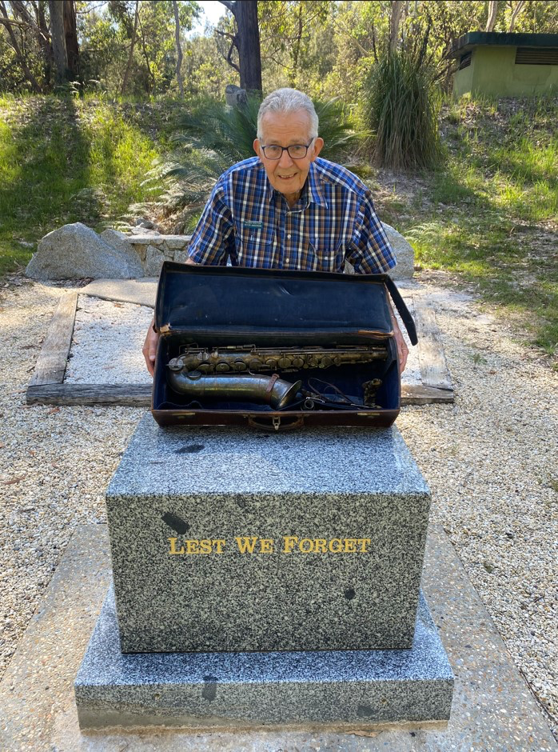
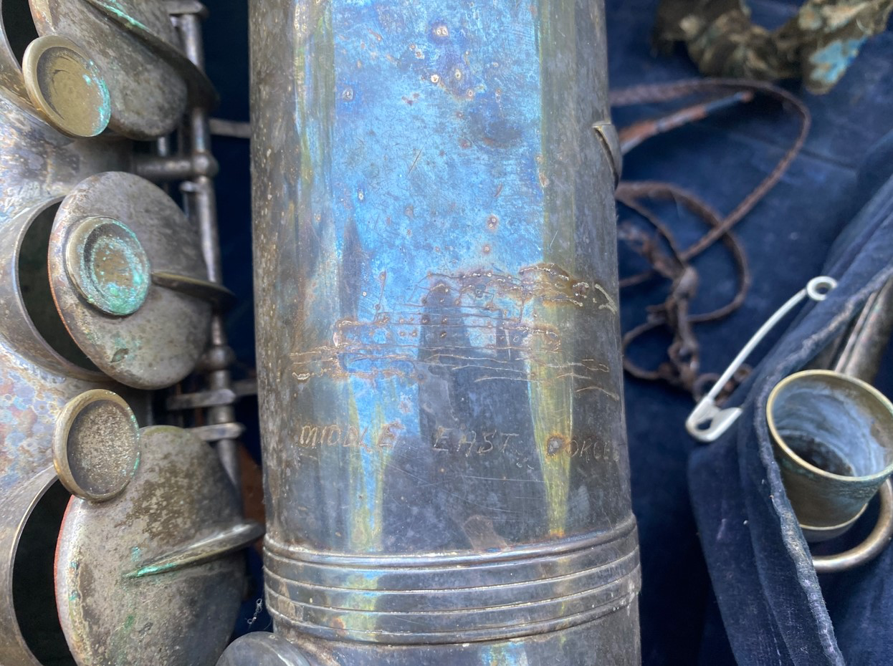
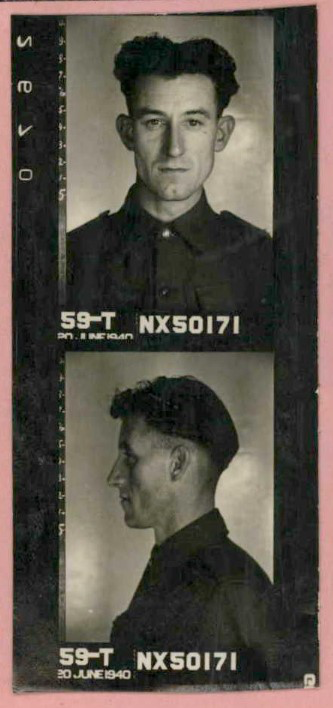
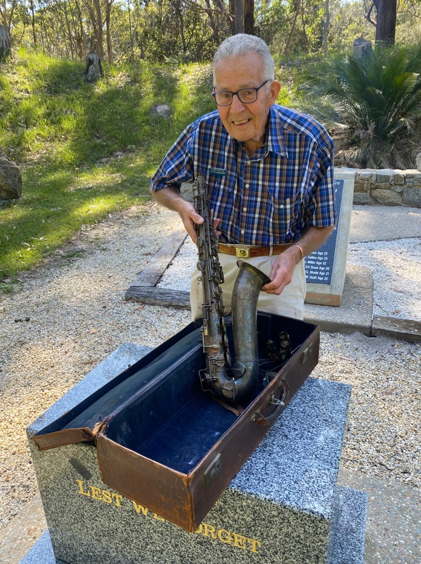
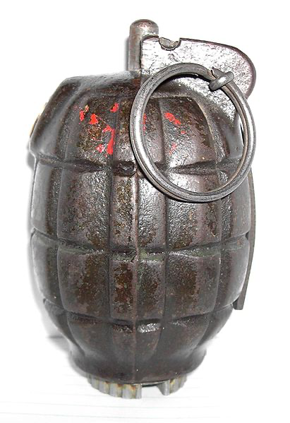
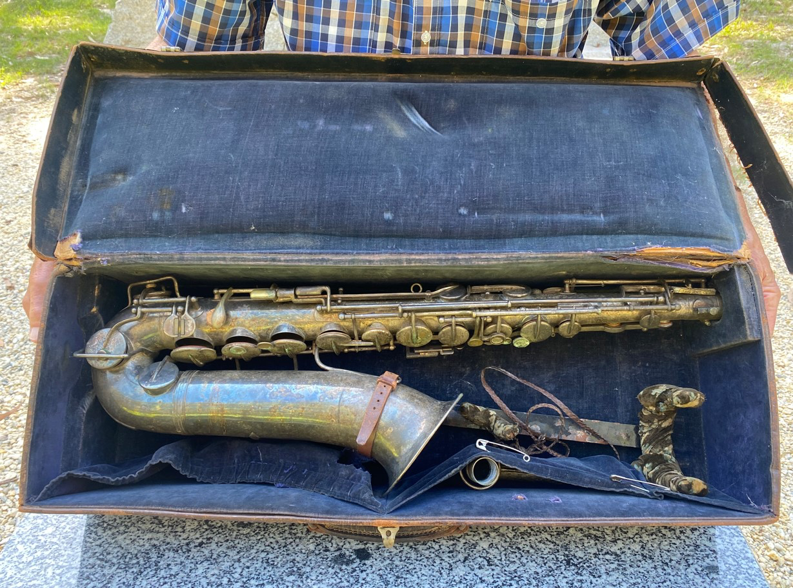

Mr Peter Anderson of Batemans Bay with his father's prized saxophone, at the Moruya Bush War Memorial. This antique instrument was carried by Peter's father whilst he served at Tobruk, during those dark days of 1941 when the fate of the free world was in the balance.
There is little doubt that tales of courage, endurance, mateship and the ANZAC character feature prominently in Australian culture. But you do not need to travel all the way to the Australian War Memorial in Canberra, to discover some hidden gems of history which need to be uncovered and recorded for posterity. Just like countless other localities around this nation, the Eurobodalla is home to many undiscovered stories. And Malua Bay man, Mr. Peter Anderson just needs to open his cupboard to reveal one such account.
On the 19th of October 1940 a soldier boarded a ship in Sydney Harbour, bound for the Middle East and desert war against Nazi Germany. But stowed away in his kit was an object which could be considered out of place, amongst the guns and munitions of an infantryman’s paraphernalia. That man was Peter’s father … and crammed amongst his meagre belonging was a musical instrument with an unmistakable resonance. Corporal Leslie Anderson of the 2/17th Infantry Battalion went to war with this ‘sax’.

NX50171 Corporal Leslie Anderson of the 2/17th Infantry Battalion AIF etched by hand, the image of his transport ship and the words 'Middle East Forces' into his saxophone, when accompanied him to war against the elite Africa Korps during World War Two.

Enlistment photographs of Leslie Anderson who was born in Balmain, Sydney. His son Peter would retire to the Eurobodalla and proudly donated a No. 36 Mills Bomb carried during fighting at Tobruk, to the Moruya Remembers Committee Museum Collection.
Corporal Anderson and diggers of the 2/17th Infantry Battalion were just some of the allied troops who held the line at Tobruk against German armour; and stood their ground in defiance of the elite Africa Corps. The fighting was severe and resulted in the award of Australia’s first major award, when Corporal John Hurst Edmondson was posthumously awarded the Victoria Cross for his involvement in the battle. Tobruk was under siege for over seven months, between 10 April and 27 November 1941. And during that time, Leslie was admitted to hospital on two occasions, at one stage suffering a laceration to his right hand. A minor inconvenience for any saxophone player.
Music has been utilized by men engrossed in war for centuries, to calm the chaos of battle and attempt to make sense of tragedy. When words can’t quite get it right, music often can. And Leslie’s saxophone was possibly heard during lulls in the fighting, drifting over the desert sands surrounding the Australians who were dug in at Tobruk. Perhaps his soothing notes were even carried on the dry desert breeze, over to the German lines a short distance away. And to prove that his sax was there, Leslie etched his treasured instrument with an image of the ship which carried them both into harm’s way.


An example of a No. 36 Mk 1 Grenade, similar to that carried by Corporal Leslie Anderson during the Siege of Tobruk in the Middle East during World War Two. Please note that outside of special exhibitions and commemorative events, no arms or ammunition are stored in the wartime bunker occupied by the Thelmore Pistol Club.
But the war took its toll on this musician and Leslie would return to Australia during March of 1942, never to take up arms again. He would bring home two souvenirs from the fighting in and around Tobruk. One of course was his cherished saxophone, proudly etched by hand with the words ‘Middle East Forces.’ The other was a No 36 Mk I Grenade (Mills Bomb), rendered innocuous and safe before leaving the battlefield. The two objects were polar opposites in their design and purpose. However, both tell the story of one man’s war against tyranny and oppression. Eighty years on, one of these objects will once again, see the light of day.
The Moruya Remembers Committee were very privileged to learn about the exploits of Leslie Anderson and ‘the Middle East sax’ when his son Peter, proudly brought this unique instrument to the old wartime bunker which houses the Thelmore Pistol Club.
And the MRC was absolutely thrilled when Peter placed into their safe custody, the Mills bomb which Leslie carried during his time in Tobruk. This item will take pride of place when it is publicly displayed for the very first time on Saturday 16th August 2025 in accordance with the 80th Anniversary of the end of World War Two. On this day, ‘the bunker’ will be reopened by the Member for Bega, Dr. Michael Holland on behalf of the Minister for Sport. This wartime bunker, the former Operations Building of the No. 11 Operational Base Unit RAAF has been closed for over two years due to flood damage and opens after a period of extensive renovation.

The 'sax' that went to war. This instrument accompanied Corporal Leslie Anderson all the way to the Middle East and was played behind the lines during the Siege of Tobruk during 1941.
The Moruya Remembers Committee Collection will be exhibited for a very short period in this bunker, in recognition of that time in history when ‘peace bells’ rang out and the war which claimed over 70 million lives world-wide, came to an end. And the Thelmore Pistol Club is proud to act as a venue for this very important commemorative period.
A free tour of the World War Two bunker complex will commence at 9am on Saturday 16th August. This tour is just one of three separate tours which will tell the story of when war came to Moruya. A free walking tour of the Moruya CBD will take place on VP Day (Friday 15th August) itself, culminating with a 5.45pm service at The Air Raid Tavern. A free tour will also be conducted of the Moruya Granite Quarry circa 9am on Sunday 17th August. Whilst it is well known that granite for the Sydney Harbour Bridge was quarried here, few know that the Honour Stone of the Martin Place Memorial, was also cut from Moruya Granite.
A short memorial service will take place at the Moruya Bush War Memorial circa 11.15am on Saturday 16th August and once this heritage listed building is reopened, the MRC collection will be available for all to see. With re-enactors walking the grounds and wartime relics being placed on display, there is something for everybody and it is hoped that residents and visitors alike, will walk away with a better understanding of the sacrifice made by “that wonderful generation” which fought for a free world. The Moruya Remembers Committee even has one display which tells the story of the Moruya Aerodrome as a timeline, through beer!
The Moruya RSL is also hosting a ‘1940’s Concert’ which will tell the story of World War Two, through its music. Whilst all guided tours are free, the charity concert is $30 per head which includes supper and over two hours of live music, short plays and displays of 1940’s ballroom dancing. Please visit the Moruya RSL Facebook page for further details where tickets can be purchased in person (or purchase a ticket online through this website).
Mr. Peter Anderson, himself is a very interesting character. As a lifelong employee of the Defence Department, he served at Woomera during the days of nuclear testing and was heavily involved in the international judging of competitive pistol shooting. As an ‘International A’ judge, he officiated over the Olympic Games and other world-wide matches. Peter is the proud son of NX50171 Leslie Anderson, who served his country during the Siege of Tobruk and he will be very pleased to show off his father’s wartime relic that was once an instrument of war.